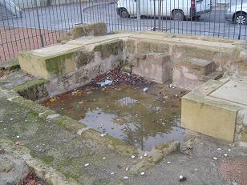

|
La villa de Cercadilla se edificó
al menos en dos fases: la primera, centrada en el siglo I y la segunda, se
inicia a mediados del siglo II. La villa se mantuvo hasta mediados del siglo III.
|
Las estructuras de la primera fase indican que
este espacio pudo emplearse como explotación aceitera. Las estructuras de la otra fase
constructiva, apuntan claramente a su configuración como la pars urbana
de una villa, algunas de cuyas estancias se decoraron con mosaicos y un opus sectile,
un suelo realizado con mármoles recortados componiendo esquemas geométricos.
Estas estancias se organizan en torno a un peristilo.
Se recuperaron dos fragmentos
de escultura en sus inmediaciones que podrían vincularse a su ornamentación, en
concreto una cabeza femenina de pequeño tamaño y un torso masculino
perteneciente a un Dionisos.
|
 |
En uno de los mosaicos se localizó una moneda de Lucio Vero
(161-169), mientras que la destrucción o abandono de la villa podría
fecharse por el hallazgo de dos monedas de plata de Gordiano II (238).
Ver
Villas Romanas
|